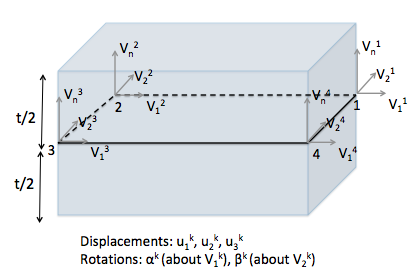

Shell elements
A shell element is used to model the response of structural elements that are much thinner along one direction (out-of-plane direction) compared to the two in-plane directions. A 4-node shell element is implemented in MOOSE based on Dvorkin and Bathe (1984) that can model structural response of both thin and thick plates.

Figure 1: Shell element with 4 nodes and 3 translational and 2 rotational degrees of freedom at each node.
Each of the four nodes have 5 degrees of freedom - 3 displacements (,, ) and 2 rotations ( and ). The thickness () is assumed to be constant across the shell element and the initial normal () at all nodes are same as the normal to the shell element, which is automatically computed using the coordinates of the nodes.
The basic equation of equilibrium for a quasi-static shell is the same as that of a continuum brick element:
The quasi-static shell element implementation is MOOSE is spread across four different objects: strain computation (ADComputeIncrementalShellStrain & ADComputeFiniteShellStrain), elasticity tensor computation (ADComputeIsotropicElasticityTensorShell), stress computation (ADComputeShellStress) and stress divergence kernel (ADStressDivergenceShell).
Strain Calculation
The first step to calculating stresses is to calculate the strains in the shell element. All the computations are performed in the natural coordinate system of the shell (, and ). The geometry of the element at any time t is defined as:
Therefore, the incremental displacements of any point within the shell element with natural coordinate at time in the global cartesian coordinate system (, and ) are:
If are the covariant base vectors, then the Green-Lagrange strain components can be written as:
The expressions for the small and large strains in the 11, 22, 12, 13 and 23 directions are provided in equations 21 to 24 of Dvorkin and Bathe (1984). The expressions for the shear strains in the 13 and 23 directions also include a correction for shear locking. In MOOSE the small strain increments are computed in ADComputeIncrementalShellStrain and the small + large strain increments are computed in ADComputeFiniteShellStrain. Note that strain in the 33 direction is not computed.
Apart from the strain increment, two other matrices (B and BNL) are computed by the strain class. These two matrices connect the nodal displacements/rotations to the small and large strains, respectively, i.e., and . These two matrices are then used to compute the residuals in ADStressDivergenceShell.
Elasticity tensor
The shell element assumes a plane stress condition, i.e., the normal stress in the 33 direction should be zero. To enable the plane stress condition, an edited constitutive tensor is created in the local cartesian coordinate system (). This local constitutive tensor is then transformed into contravariant constitutive tensor using:
where are the contravariant base vectors. The contravariant base vectors , and are determined from the covariant base vectors , and using the following equations:
These contravariant base vectors satisfy the orthogonality condition: , where is Kronecker delta. The vectors are the local cartesian coordinate system defined based on a user-defined reference first local direction vector , which is defined by the reference_first_local_direction parameter, which defaults to the direction (i.e. ). The projection of onto the local element's plane provides the first local direction, so that the vectors are computed as:
In this equation, represents the element's normal vector. The second local vector is obtained via the cross product of and . The projection of onto each element ensures that lies in-plane and is perpendicular to the element's normal. The projection of on the shell element is then determined via the cross product of and . The elasticity tensor at each quadrature point (qp) is computed in ADComputeIsotropicElasticityTensorShell.
Stress calculation
The stress tensor at each qp is computed as:
The total stress at each qp is computed in ADComputeShellStress.
Stress divergence
Finally the residuals are computed and assembled in ADStressDivergenceShell for both small and large strain scenarios. For small strain scenarios, the residual at each qp is computed by multiplying the stress tensor at that qp with the corresponding components of the B matrix. Additionally, for large strain scenarios, the old stress tensor is multiplied with corresponding components of the matrix and that is also added to the residual at each qp. These two components for the residual are same as and in equation 25 of Dvorkin and Bathe (1984).
Note that there are quadrature points both along the plane as well as along the thickness of the element. The order of Gauss quadrature rule along the thickness is provided as input by the user to all the above mentioned objects.
Inertia
This element's generalized inertia forces are obtained directly from the kinematic of the shell by computing the inertial forces component-wise. Inertia forces can be expressed in terms of a mass matrix as described in Bolourchi (1979). The mass matrix takes the following form of a volume integral:
where is an element-wise matrix that contains the interpolation functions for displacement and rotational degrees of freedom. In the implementation, the volume integral is simplified, and it is assumed that the element thickness is constant. Similarly, one orientation matrix is used per element, that is, changes in orientation in a single element's geometry are neglected.
References
- Saïd Bolourchi.
On finite element nonlinear analysis of general shell structures.
PhD thesis, Massachusetts Institute of Technology, 08 1979.[Export]
- E Dvorkin and K Bathe.
A continuum mechanics based four-node shell element for general non-linear analysis.
Engineering Computations, 1(1):77–88, 1984.[Export]